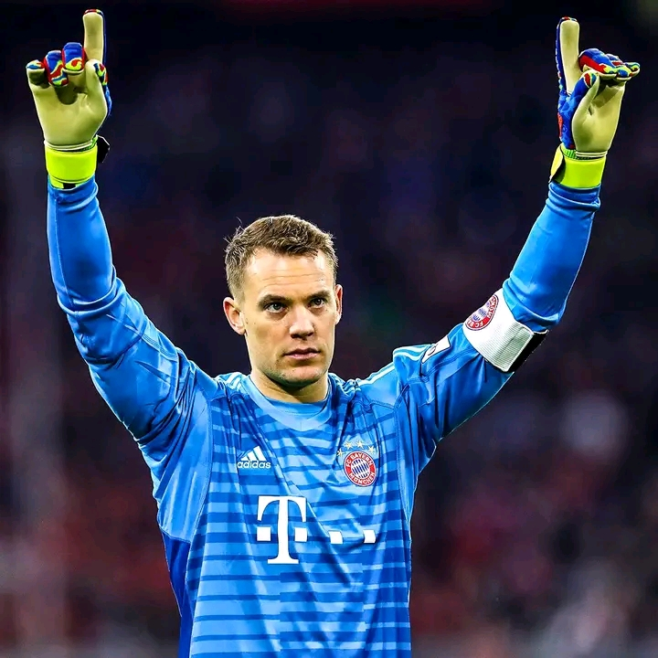
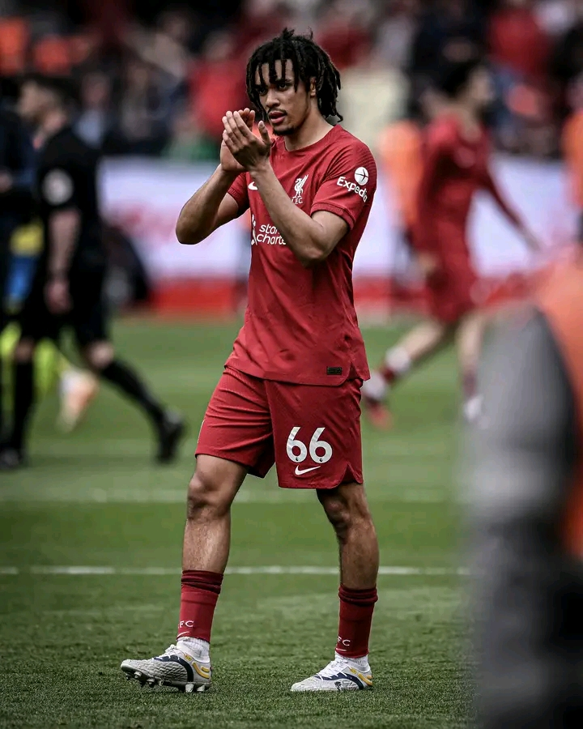
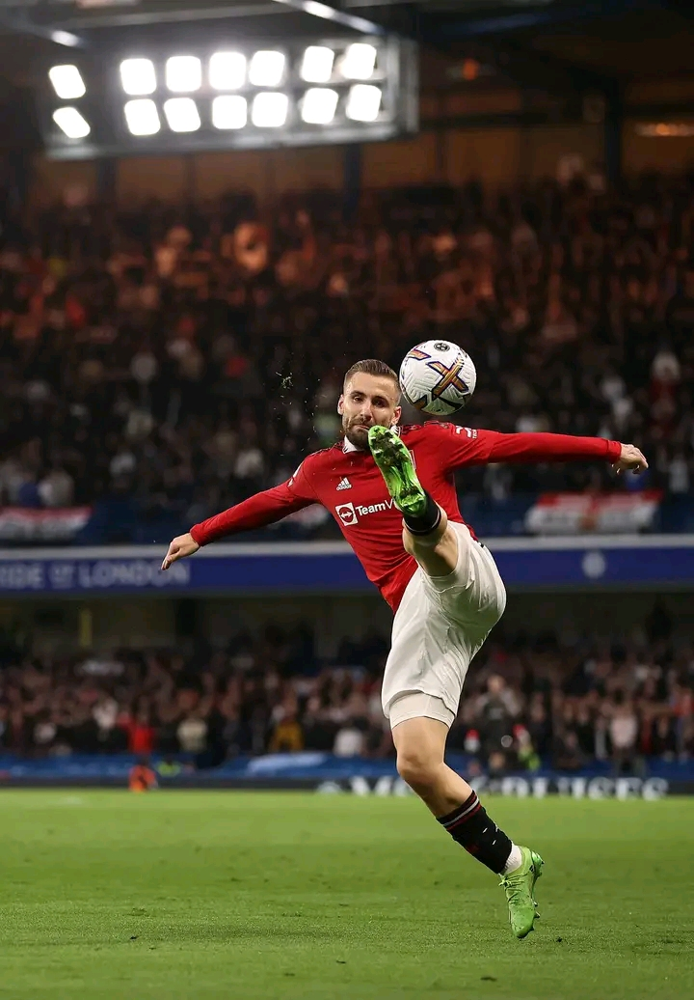
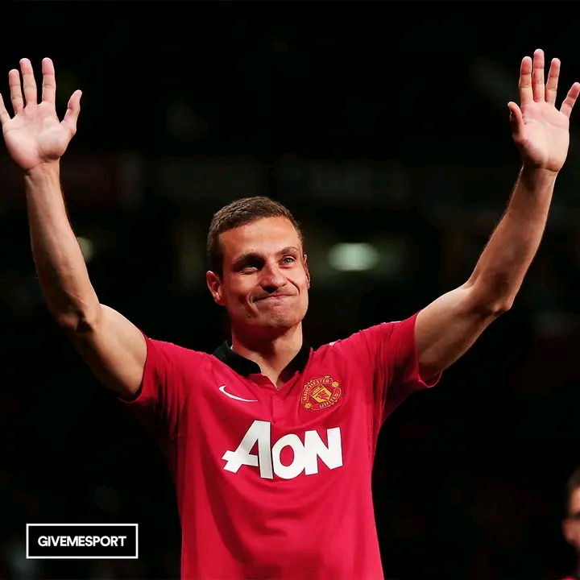
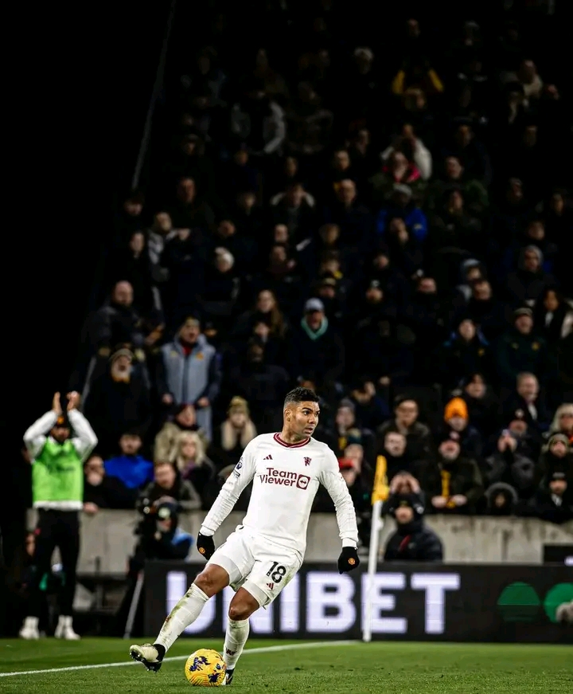
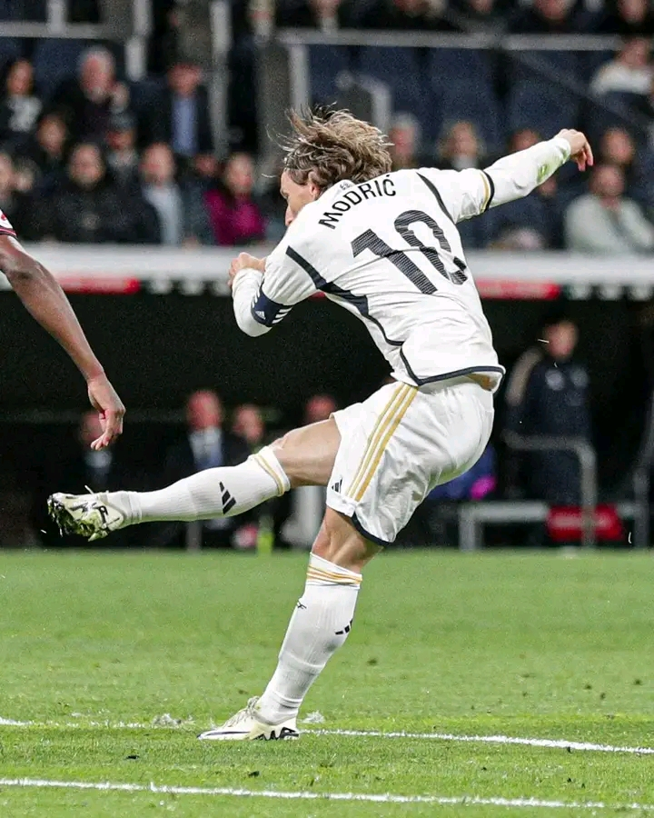
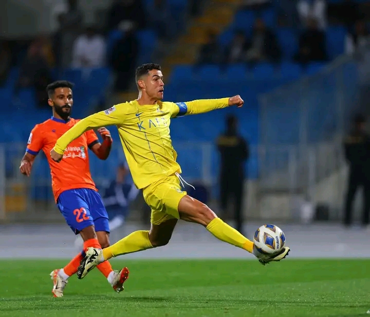
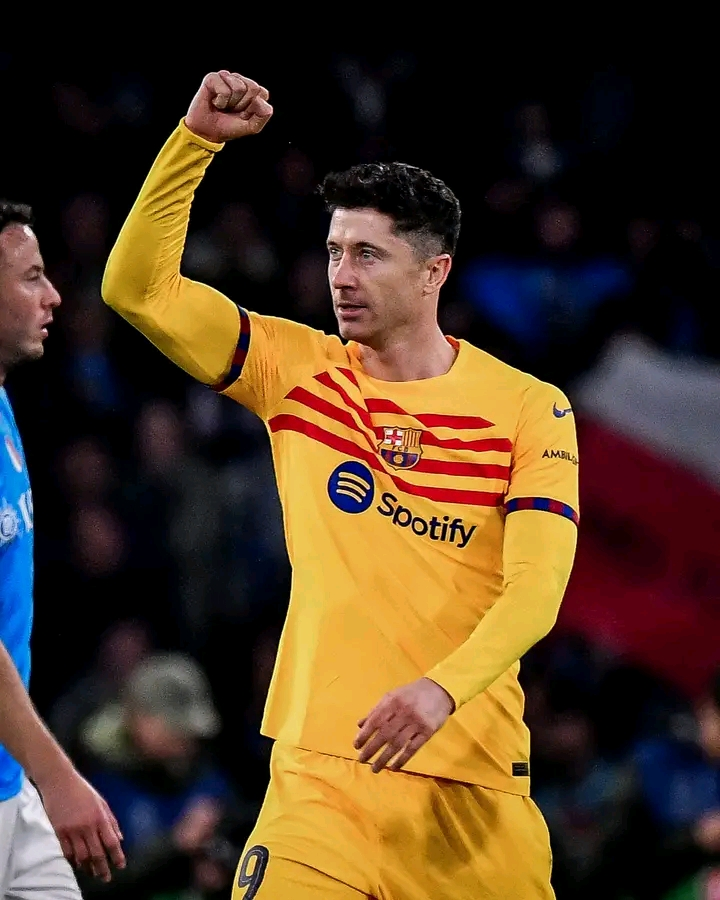

The goalkeeper, often referred to as the 'shot-stopper', is the last line of defense. Their primary objective is to prevent the opposing team from scoring goals. GKs are adept at positioning themselves to cover as much of the goal as possible and possess excellent reflexes to make crucial saves. They also play a vital role in organizing the defense, providing vocal instructions, and often initiating attacking moves with precise distribution.
Full-backs, as the name suggests, operate on the flanks of the defensive line. They are responsible for marking opposing wingers, intercepting passes, and providing defensive cover. Additionally, modern full-backs are expected to contribute to the attack by overlapping their respective wingers, delivering crosses into the box, and occasionally cutting inside to create goal-scoring opportunities.
 Center backs form the backbone of the defense. They are tasked with thwarting opposition attacks, winning aerial duels, and intercepting passes. CBs must possess exceptional positional awareness, anticipation, and physical prowess to outmuscle opposition forwards. Communication with fellow defenders is crucial to maintain a solid defensive unit, as they coordinate defensive lines and offside traps.
CDMs act as a shield for the defense, providing protection to the backline while also initiating attacks. They excel in breaking up opposition plays through interceptions and tackles, before distributing the ball to more creative players further up the field. CDMs are often regarded as the engine room of the team, dictating the tempo of the game and maintaining possession under pressure.
Central midfielders are the orchestrators of play, responsible for linking defense to attack. They possess a diverse skill set, including passing accuracy, vision, dribbling ability, and tactical intelligence. CMs dictate the flow of the game, controlling possession, and distributing the ball to teammates in key areas. They are also expected to contribute defensively and support the attack when opportunities arise.
AMs are the creative hub of the team, tasked with unlocking opposition defenses with incisive passes, dribbles, and through balls. They operate in the space between midfield and attack, exploiting gaps in the opposition's defensive structure. AMs often have license to roam freely across the attacking third, constantly seeking to create goal-scoring opportunities for themselves and their teammates.
Wingers are known for their explosive pace, dribbling skills, and ability to deliver dangerous crosses into the box. They hug the touchline, stretching the opposition defense and providing width to the team's attacking play. RWs and LWs often engage in one-on-one duels with opposition full-backs, using their trickery and speed to beat their markers and deliver crosses or cut inside for shots on goal.
The center forward, also known as the striker, is tasked with the primary responsibility of scoring goals. They are the focal point of the team's attack, constantly making runs to create space and exploit defensive weaknesses. CFs must possess clinical finishing ability, aerial prowess, and physical strength to hold up play and bring teammates into the game. They are often the difference-makers in tight matches, capable of turning half-chances into decisive goals.
In conclusion, football is a sport of multifaceted roles, each essential to the team's success. Whether it's the goalkeeper's heroics, the full-backs' defensive diligence, the midfield maestros' creativity, or the strikers' lethal finishing, every player contributes to the beautiful tapestry of the game. Understanding these roles not only enhances one's appreciation for football but also provides insights into the tactical intricacies that unfold on the pitch. So, the next time you watch a match, pay attention to the players' roles, and marvel at the symphony of skills that define the beautiful game.